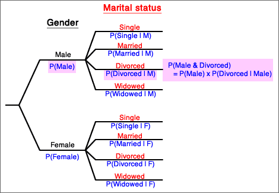
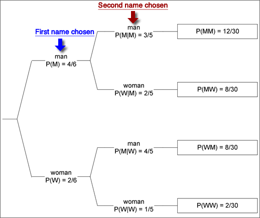

Tree diagrams for two attributes
Two categorical variables (or types of event) are sometimes represented in a type of diagram called a tree diagram. The main branches are labeled with their marginal probabilities. The branches to the right are labeled with their conditional probabilities, conditional on the branches to the left leading to that fork.
Joint probabilities can be easily found by multiplying the probabilities down the corresponding branches. This corresponds to applying the general multiplication rule, P(A and B) = P(A) × P(B | A).

Sampling without replacement
Consider selection of two students from a class of 2 women and 4 men by "pulling names out of a hat". The following tree diagram illustrates this process.

Note that the conditional probability of the second student being male depends on whether the first student is male (top branch) or female (third branch). The diagram also shows the joint probabilities on the right and these allows us to determine the probability that one student of each gender is selected.
P(one man and one woman) = P(MW) + P(WM)
= 8/30 + 8/30 = 8/15